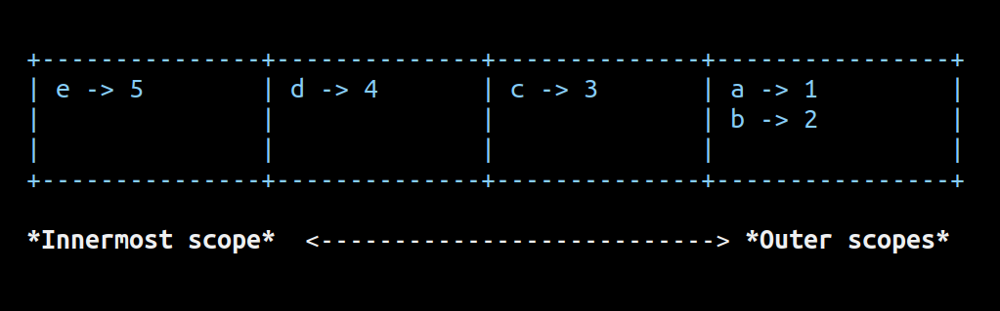

Rena’s Memory Model
2021-Nov-25
Rena is my implementation of lox tree-walk interpreter in Rust. I’m rewriting it in Rust to familiarize myself with the borrow checker and the fancy toolchain it offers. In this post, I’ll explain how I implemented a simple environment for the interpreter.
Structure
The environment is structured as a vector of hashmaps and is initialized with an empty hashmap to represent the global scope. Every new block in the source code inserts an empty hashmap at the head of the vector and exiting out of a block removes a hashmap from the head. The environment combines these three properties to support nesting and shadowing of values in the memory.
pub struct Environment { frame_list: Vec<HashMap<String, Value>>, } pub fn new() -> Environment { let mut frames = Vec::new(); frames.push(HashMap::new()); Environment { frame_list: frames, } } pub fn new_scope(&mut self) { self.frame_list.insert(0, HashMap::new()); } pub fn exit_scope(&mut self) { self.frame_list.remove(0); }
Declaring New Values
When the interpreter encounters a new block in the parsed source code, it first calls new_scope() to initialize a new hashmap for the block. So when new values are declared inside the block, they can be safely inserted in the first hashmap of the vector which represents the innermost scope.
pub fn define(&mut self, name: String, value: Value) -> Result<(), LoxError> { if let Some(frame) = self.frame_list.get_mut(0) { frame.insert(name, value); Ok(()) } else { error!("Frame not available.") } }
Fetching and Assigning Values
fetch() is used to fetch a value from the environment and assign() is used to assign a new value to a predefined key. Both the functions are required to climb up from the starting scope to the global scope until a hashmap containing the given key is found. This is accomplished by iterating through each hashmap in the vector and performing the fetch or assign operation only if a hashmap contains the key. If the key is not found in any hashmap, the value being searched for has not been declared.
For example, to fetch a variable a declared in the global scope and used inside a block statement, the interpreter will first check the first hashmap in the vector (innermost scope) for the variable name and will not find it. So it will proceed to check the second hashmap (global scope) and since this hashmap contains the variable’s key the function will return the value associated with the key.
pub fn fetch(&self, name: String) -> Option<&Value> { for frame in &self.frame_list { if frame.contains_key(&name) { return frame.get(&name); } } None } pub fn assign(&mut self, name: String, value: Value) -> Result<Value, LoxError> { for frame in &mut self.frame_list { if frame.contains_key(&name) { frame.insert(name, value.clone()); return Ok(value); } } error!("Undefined variable.") }
The End
Here’s a pictorial representation of the environment for the source code below. The first element represents the innermost scope and the following elements represent the enclosing outer scopes. 
var a = 1;
var b = 2;
{
var c = 100;
print a; // 1
{
var d = 4;
{
var e = 5;
c = 3;
print c; // 3
}
}
}
Compared to the implementation provided in the book, my implementation sits well with the borrow checker and may be more performant and readable as it uses iteration instead of recursion to climb up the nested scopes.
Now, back to hacking :^)